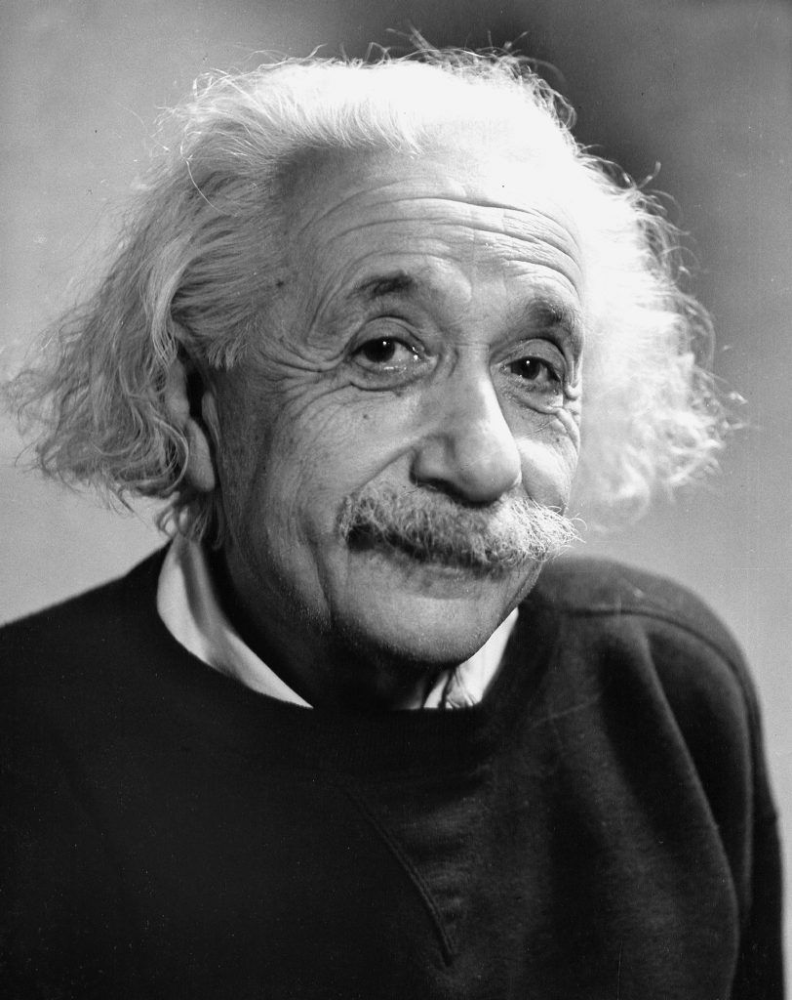
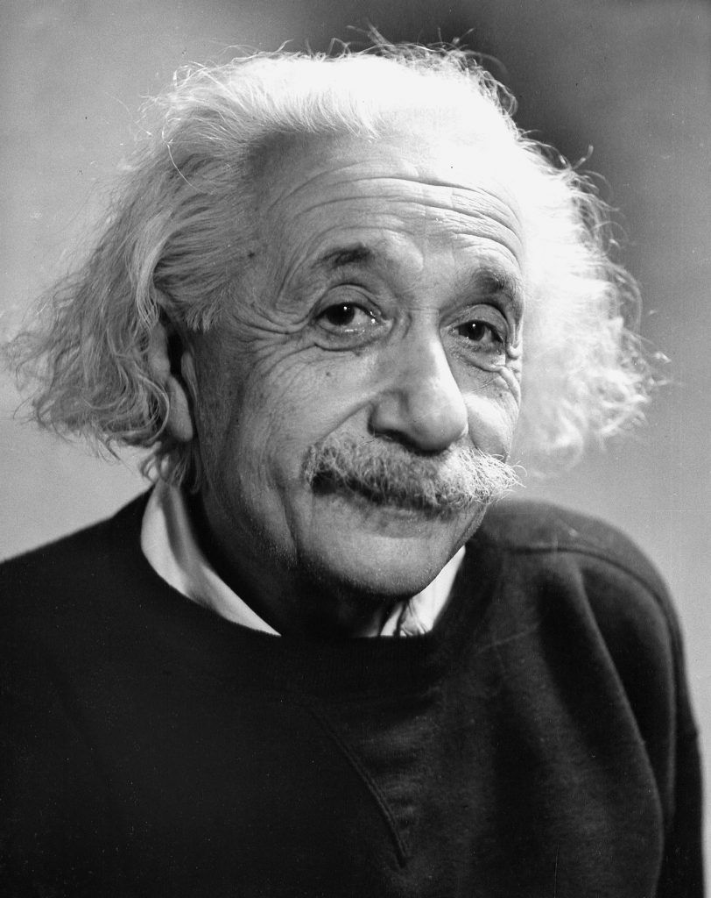

Albert Einstein

 

About the Legend
☛ Einstein is best known for developing the theory of relativity, but he also made important contributions to the development of the theory of quantum mechanics.
☛ Relativity and quantum mechanics are the two pillars of modern physics.
☛ His mass–energy equivalence formula E = mc2, which arises from relativity theory, has been dubbed "the world's most famous equation".
☛ His work is also known for its influence on the philosophy of science.
☛ He received the 1921 Nobel Prize in Physics "for his services to theoretical physics, and especially for his discovery of the law of the photoelectric effect", a pivotal step in the development of quantum theory. His intellectual achievements and originality resulted in "Einstein" becoming synonymous with "genius".
☛ In 1905, a year sometimes described as his annus mirabilis ('miracle year'), Einstein published four groundbreaking papers.
☛ These outlined the theory of the photoelectric effect, explained Brownian motion, introduced special relativity, and demonstrated mass-energy equivalence.
☛ Einstein thought that the laws of classical mechanics could no longer be reconciled with those of the electromagnetic field, which led him to develop his special theory of relativity.
☛ He then extended the theory to gravitational fields; he published a paper on general relativity in 1916, introducing his theory of gravitation. In 1917, he applied the general theory of relativity to model the structure of the universe.
☛ He continued to deal with problems of statistical mechanics and quantum theory, which led to his explanations of particle theory and the motion of molecules. He also investigated the thermal properties of light and the quantum theory of radiation, which laid the foundation of the photon theory of light.
☛ However, for much of the later part of his career, he worked on two ultimately unsuccessful endeavors. First, despite his great contributions to quantum mechanics, he opposed what it evolved into, objecting that "God does not play dice".
☛ Second, he attempted to devise a unified field theory by generalizing his geometric theory of gravitation to include electromagnetism. As a result, he became increasingly isolated from the mainstream of modern physics.
☛ Einstein was born in the German Empire, but moved to Switzerland in 1895, forsaking his German citizenship (as a subject of the Kingdom of Württemberg).
☛ In 1897, at the age of 17, he enrolled in the mathematics and physics teaching diploma program at the Swiss Federal polytechnic school in Zürich, graduating in 1900. In 1901, he acquired Swiss citizenship, which he kept for the rest of his life, and in 1903 he secured a permanent position at the Swiss Patent Office in Bern.
☛ In 1905, he was awarded a PhD by the University of Zurich. In 1914, Einstein moved to Berlin in order to join the Prussian Academy of Sciences and the Humboldt University of Berlin.
☛ In 1917, Einstein became director of the Kaiser Wilhelm Institute for Physics; he also became a German citizen again, this time Prussian.
☛ In 1933, while Einstein was visiting the United States, Adolf Hitler came to power in Germany. Einstein, as a Jew, objected to the policies of the newly elected Nazi government; he settled in the United States and became an American citizen in 1940. On the eve of World War II, he endorsed a letter to President Franklin D. Roosevelt alerting him to the potential German nuclear weapons program and recommending that the US begin similar research. Einstein supported the Allies but generally denounced the idea of nuclear weapons.
For more information, check out Albert Einstein on Wikipedia. ( Developed by Stachev Gleb.)